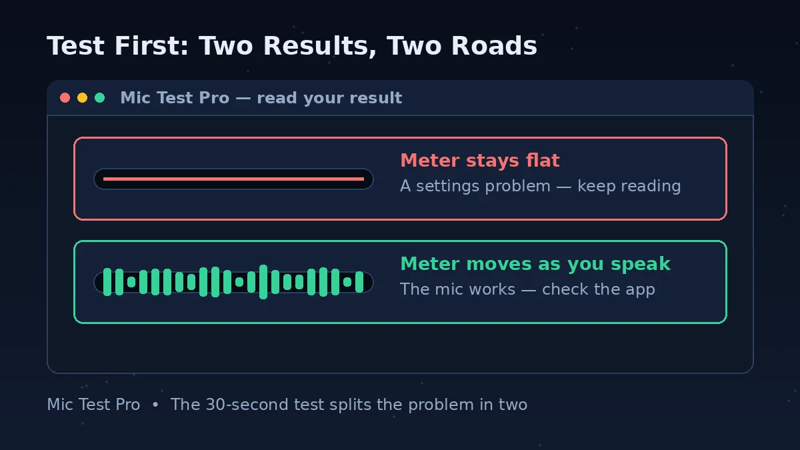
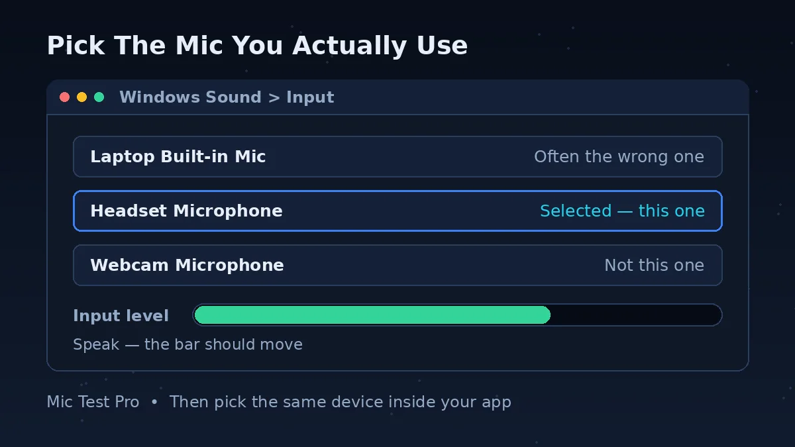
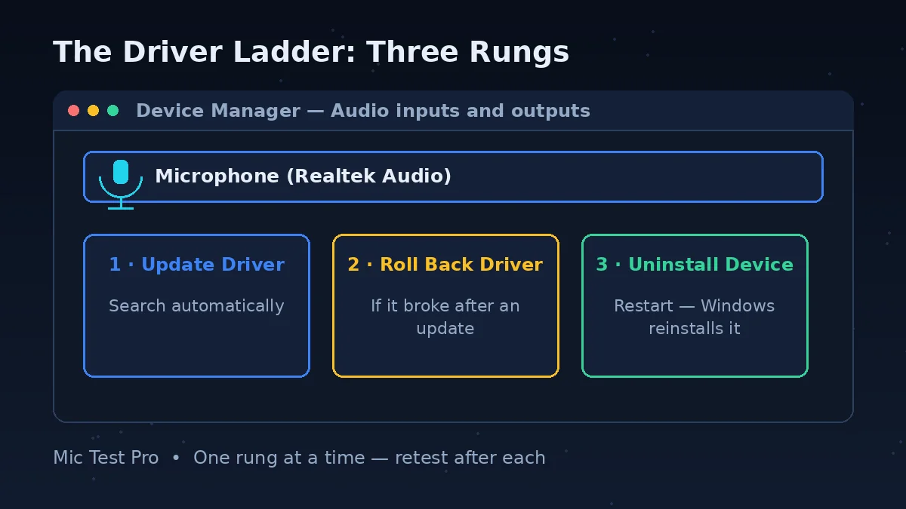
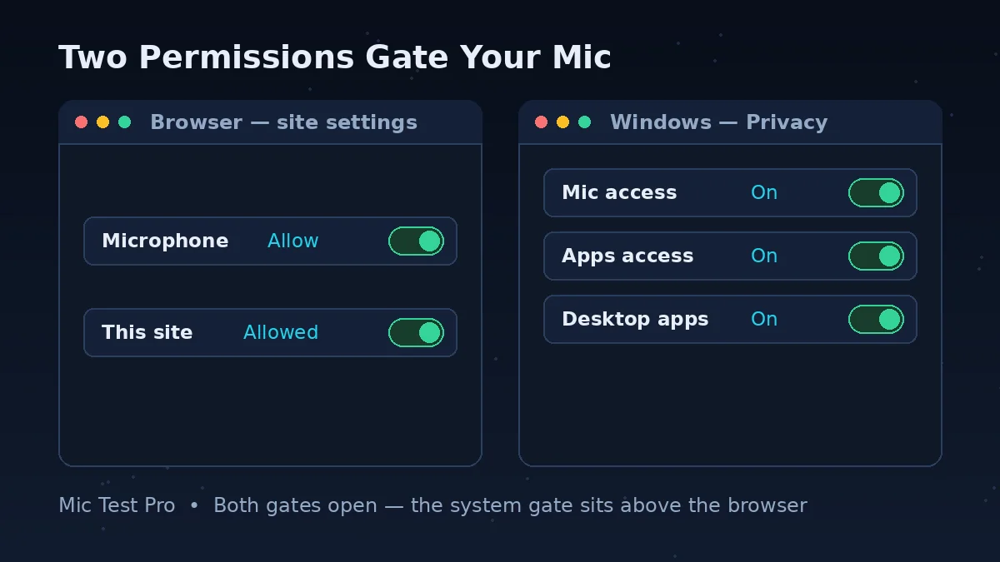

Read Your Test Result

The test above listens the same way a call does — through your browser, with the microphone you pick. That makes its result a diagnosis, not just a check. Three results are possible, and each points at a different fix.
The meter moves when you speak. Your microphone, its connection and the browser permission all work. The fault lives downstream — in the app that cannot hear you, or in the device it selected. Go straight to Step 5 of the ladder.
The meter stays flat. The microphone itself is not reaching the browser — the case this page is built for: a mute, a blocked permission, the wrong default device, a level at zero, or a driver fault. Work through the fix ladder in order; the troubleshooting table below maps your exact symptom to its step.
No microphone is listed, or the browser says the mic is busy. If no device appears at all, the computer is not detecting the microphone — check the connection, then the ladder's last steps. If the browser reports the mic is already in use, another app may be holding it: close other audio apps and test again.
One habit matters: test with the setup you will actually use. Plug the headset in and test that microphone — a pass on the laptop's built-in mic proves nothing about the headset you are about to wear on the call.
Why Isn't My Microphone Working? The 6 Causes
Almost every case of a computer microphone not working comes down to one of six causes. Asking why isn't my mic working? It is one of these six — listed in the order the fix ladder checks them, quick physical causes first, so you stop at the first one that is yours.
A mute or a loose connection. The mic's own mute switch, an inline cable mute, a laptop mic-mute key, or a plug that is not fully in. The cheapest cause — and the one people check last.
The browser blocked the microphone. You clicked Block once, or the site was never allowed. Websites stay silent while apps still work — or the reverse.
The system permission is off. Windows and Mac gate the microphone behind a privacy switch. If it is off, no app and no browser gets the mic, however right the other settings look.
The wrong default device, or the level is at zero. Computers collect microphones — built-in, webcam, headset — and cheerfully listen to the wrong one. Or the right one, with its input volume at nothing.
One app's own settings. Every calling app picks its own input and keeps its own mute — it can listen to a webcam mic while the system listens to your headset.
A driver fault, or dead hardware. The software layer the system uses to talk to the mic can break, often right after an update. And sometimes — rarely — the mic itself has failed.
How To Fix Mic Not Working — In Order
Seven steps, in the order that wastes the least time. Retest after each one and stop when the meter moves — the early steps are quick physical checks, and they fix most microphones.
Check the mute and the connection. Clear every mute: the mic's switch, the inline cable mute, the laptop's mic-mute key. Push the plug in until it clicks — on a headset the mic contact is the last ring, so a half-in plug gives sound but no voice. On USB, try another port.
Allow the browser. When the test asks for the microphone, choose Allow. Already blocked it? In Chrome: Settings > Privacy and security > Site settings > Microphone — remove this site from the blocked list and reload. The browser section below has the full path.
Allow the system. On Windows, Settings > Privacy & security > Microphone: turn on Microphone access, Let apps access your microphone, and Let desktop apps access your microphone — the desktop switch is the one browsers and call apps answer to. On Mac, System Settings > Privacy & Security > Microphone: switch your browser on, then quit and reopen it.
Pick the right default device and raise the level. Windows: Settings > System > Sound > Input — select the mic you actually use and check the Input volume is up. Mac: System Settings > Sound > Input. Then test again and watch the meter.
Set the device inside the app. If the test hears you but a call does not, open the app's own audio settings, select the same microphone and undo its mute. Close other apps that may be holding the mic while you test.
Run the troubleshooter, then the driver ladder. Windows can check itself: the Get Help app runs an automated audio troubleshooter. If that fails, open Device Manager and work down the rungs in the Windows section below — update, roll back, reinstall.
Cross-test for the hardware verdict. Plug the microphone into another device, and a different microphone into this one. The result tells you whether you are fixing a setting or replacing a mic — the FAQ's last questions walk through it.
Find Your Symptom
Not Detected At All
No microphone appears in the test or in settings. Start with the connection — plug, port, cable — then Step 6: a mic missing from every list is usually a disabled device or a driver fault.
Works In The Test, Not In Calls
The meter moves here, but your call hears nothing: the app picked a different input, or its own mute is on. Fix it in Step 5 — or go straight to your app's page: Zoom, Teams, Discord, Meet.
Far Too Quiet
People hear you, but faintly: the input level is too low, or you sit too far from the mic. Step 4 sets the level — raise it there before you raise your voice.
Headset Speakers Work, Mic Doesn't
Sound arrives, voice does not: the plug is half-in (the mic contact is the last ring), a single-plug headset sits in a split socket without a splitter, or a Bluetooth headset is on its stereo profile instead of hands-free. The Bluetooth mic test covers the wireless half.
Stopped Working After An Update
It worked yesterday; an update landed; now it is dead. That timing points at the driver, not the hardware — the driver ladder in the Windows section is built for this case.
Laptop Microphone Not Working
Most cases of a microphone not working on laptop come down to three things: the privacy switches, the mic-mute function key, or the wrong input selected — Steps 3 and 4 cover all three. If a plug-in mic works in the same laptop, the built-in one or its driver has failed.
Sounds Distorted, Echoey Or Hissy
People hear you, but badly. Distortion: the input level is too high — lower it. Echo: your speakers feed back into the mic — use headphones. Hiss: the level is pushed up to catch a quiet voice — move closer instead. All three are set in Step 4.
Microphone Troubleshooting Table
The computer microphone troubleshooting map for the whole page: find your problem, read its likely cause, apply the fix, and use the last column to confirm it on the test above.
| Problem | Likely Cause | Fix | Check On This Page |
|---|---|---|---|
| No sound at all — the meter is flat everywhere | Mute or connection | Clear every mute — mic switch, inline cable mute, laptop mic-mute key. Reseat the plug: pink mic jack on a desktop, or push until it clicks on a combined jack. USB: another port. | Meter flat in the test above |
| This site (or any site) cannot see the mic | Browser permission | Choose Allow on the prompt. In Chrome: Settings > Privacy and security > Site settings > Microphone — remove the site from the blocked list, pick the right mic. | Device box empty, or the wrong name |
| Microphone is not working in any app (Windows) | System privacy (Windows) | Settings > Privacy & security > Microphone — Microphone access ON, Let apps access ON, Let desktop apps access ON. The desktop switch governs browsers and call apps. | Meter flat in every tab and app |
| Mic dead in every app on Mac | System privacy (Mac) | System Settings > Privacy & Security > Microphone — switch the app or browser on, then quit and reopen it. | Meter flat until the app reopens |
| The wrong microphone is being used | Default device | Settings > System > Sound > Input (Windows) or System Settings > Sound > Input (Mac) — select the real mic, then the same device in the test and your app. | A different name in the Device box |
| The mic works, but nobody hears anything | Input level at zero | Raise the Input volume (Windows Sound > Input; Mac Sound > Input slider) and confirm with the built-in Start test or Input level meter. | Meter barely moves at normal volume |
| Headset speakers work, the microphone doesn't | Plug or Bluetooth profile | Push the plug fully in — the mic contact is the last ring. A single-plug headset in a split socket needs a splitter. On Bluetooth, the mic works only on the hands-free profile. | Speakers fine, meter flat |
| Works in the test, silent in Zoom, Teams or Discord | The app's own settings | Set the same microphone inside the app, undo its mute, and close other apps that may be holding the mic. App-by-app fixes: the Zoom, Teams, Discord and Meet pages. | This page hears you — the app does not |
| Stopped working after a Windows update | Driver | Device Manager: Update driver. Broke after an update? Roll Back Driver (Properties > Driver). Otherwise Uninstall the device and restart. Or run the Get Help troubleshooter. | Meter flat since the update |
| Mic missing from every device list | Hardware verdict | Cross-test: this mic on another device, another mic on this one. Dead everywhere means hardware; working elsewhere means this machine's driver — the row above. | No device listed anywhere |
Mic Not Working On PC — Windows Fixes

If you are fixing a mic not working on PC, Windows spreads its microphone settings across privacy, sound and the device manager. The order below wastes the least time: permissions first, the device second, drivers last.
Start with privacy — it silently overrides everything else. Open Settings > Privacy & security > Microphone and turn on three switches: Microphone access, Let apps access your microphone, and Let desktop apps access your microphone. Desktop apps — browsers, Zoom, Teams, Discord — answer to that third switch, so this page can be blocked even when the first two are on.
Next, the device. Settings > System > Sound > Input: select your microphone, speak, and use the built-in Start test to watch the level respond. If the mic is missing here, open Advanced > More sound settings > Recording — a disabled device hides there; open its Properties and set Device usage to Use this device (enable). While in Sound, turn Audio enhancements Off for the device under its advanced settings: misbehaving enhancements can mute an input.

Windows can also check itself: the Get Help app runs an automated audio troubleshooter, and Settings > System > Troubleshoot > Other troubleshooters has an Audio entry. If neither helps, the driver ladder is next. In Device Manager, under Sound, video and game controllers: first Update driver and let Windows search automatically. If the mic broke right after an update, open the device's Properties > Driver tab and choose Roll Back Driver. Still stuck? Uninstall the device and restart — Windows reinstalls the driver itself. Last rung, the generic driver: Update driver > Browse my computer > Let me pick > High Definition Audio Device.
Microphone Not Working On Mac
On a Mac the microphone settings live in two places, and both must agree: the input selection in Sound, and the permission list in Privacy & Security.
Sound first. Open System Settings > Sound > Input, select your microphone, and raise the Input volume slider. Speak while you watch the Input level meter — it should jump as you talk. Flat with the right device selected? The permission is the next stop.
Open System Settings > Privacy & Security > Microphone. Every app and browser that may use the mic is listed with its own switch. Turn on your browser — and any app that cannot hear you — then quit that app completely and reopen it: macOS applies the change on relaunch. If the app is missing from the list, open it, let it ask for the microphone once, then check again.
A cross-test is built into the Apple kit: an iPhone can be selected as the Mac's microphone under Sound > Input. If the iPhone mic works there and yours does not, the fault is isolated to your microphone or its connection.
Microphone Blocked In The Browser?

Every mic test and browser call starts with a permission prompt: Allow while visiting the site, Allow this time, or Never allow. One accidental click on Never allow, and that site can never hear you until you undo it. A blocked mic looks exactly like a broken one.
In Chrome, the mic settings live under Settings > Privacy and security > Site settings > Microphone. Pick the microphone you want sites to use from the dropdown, then find this site in the blocked list and remove the block — or open the site, click the icon at the left of the address bar, and allow the microphone there. Reload and test again.
Other browsers guard the mic the same way — a per-site permission in the site or privacy settings — though the menus differ. Two rules hold everywhere: the browser can only offer microphones the system already allowed, so the system's permission sits above the browser's; and on a work or school computer, an administrator can lock these mic settings against change.
That permission is also what makes this test safe to allow: the browser opens the mic only after your click and shows an indicator while it is in use — and this page analyses your audio here, in your browser. Nothing is uploaded.
Microphone Not Working FAQs
Why isn't my microphone working?
Almost always one of six causes: a mute or loose connection, the browser's permission blocked, the system's privacy permission off, the wrong default device or a level at zero, one app's own settings, or a driver fault. Run the test at the top of this page first — if the meter moves, the mic works and the cause is an app or a setting; if it stays flat, work through the fix ladder in order. The microphone itself is rarely the broken part.
How do I fix a mic that is not working on my PC?
In order: clear every mute and reseat the plug; allow the browser and system permissions (Settings > Privacy & security > Microphone — access, apps and desktop apps all on); select the right microphone under Settings > System > Sound > Input and raise its volume; then work down the driver ladder — update, roll back, uninstall and restart. Retest after each step.
Why is my laptop microphone not working?
Usually one of three reasons: the privacy switches are off, the laptop's mic-mute function key is engaged, or the system is listening to a different input. Check the permissions (Step 3), select the built-in mic as the input (Step 4), and look for a microphone icon on your function keys. Still nothing? Plug in any headset or phone mic and test it — if that works, the built-in mic or its driver is the fault. Anyone hunting a mic not working on laptop fix should run those three checks first.
How do I allow microphone access on Windows?
Open Settings > Privacy & security > Microphone. Turn on Microphone access, Let apps access your microphone, and Let desktop apps access your microphone — the third switch is the one browsers and desktop call apps answer to, so all three must be on. Then reload the page or reopen the app.
How do I make my microphone the default device?
On Windows, open Settings > System > Sound > Input and select your microphone — choosing it there makes it the device your apps use. On a Mac, System Settings > Sound > Input, and select it there. Then pick the same device inside your app and in the test at the top of this page.
Why is my microphone not showing up in settings?
Work from the outside in: the plug or USB connection first, then another port. On Windows, a disabled mic hides from the normal list — open Settings > System > Sound > Advanced > More sound settings > Recording, open its Properties and set Device usage to Use this device (enable). Absent there too? Reinstall the driver from Device Manager. Missing on two computers means it has failed — a hardware verdict, not a setting.
My headset microphone doesn't work but the headphones do — why?
Three usual causes. The plug is not fully in — the mic contact is the last ring, so a half-in plug gives sound without voice; push it until it clicks. The headset has one combined plug but the socket is split, or the reverse — that pairing needs a splitter adapter. Or it is a Bluetooth headset, whose mic only works on its hands-free profile — pick the Hands-Free device as the input.
Why does my mic work in the test but not in Zoom or Discord?
The test listens through your browser; the app listens through its own device choice. The app has selected a different input — often the built-in mic or a webcam — or its own mute is on. Open the app's audio settings, select the same microphone that passed this test, and undo the mute. Each app keeps these settings elsewhere, so this site has a page per app: Zoom, Teams, Discord and Google Meet are linked from the symptom cards above.
Why is my microphone so quiet that nobody can hear me?
The input level is too low, or you are too far from the mic. On Windows, Settings > System > Sound > Input: select the mic, raise the Input volume, then use the Start test to check it. On a Mac, System Settings > Sound > Input has the Input volume slider and a live Input level meter. Raise the level before you raise your voice — and move closer instead of maxing the level out.
Should I update my drivers if my microphone stops working?
Yes — after the permission and device checks. In Device Manager, under Sound, video and game controllers, choose Update driver and let Windows search automatically. If the mic stopped right after a Windows update, do the opposite: Properties > Driver tab > Roll Back Driver. If neither works, Uninstall the device and restart — Windows reinstalls the driver itself.
How can I tell if my microphone is broken or it's just a setting?
Cross-test both ways. Put your microphone on another computer or phone: if it fails there too, the mic or its cable has failed. Put a different microphone on this computer: if that one also fails, this computer's settings or driver are at fault. If your mic works elsewhere and another mic works here, the fault is the pairing — go back to the device and driver steps.
Why does my microphone sound distorted, echoey or full of hiss?
Three problems, three fixes. Distorted: the input level is too high — lower the Input volume until your loudest words stay clean. Echoey: your speakers are feeding back into the mic — use headphones, or turn the speakers down and move them away. Hissy: the level is pushed up to catch a quiet voice — move closer so the level can come down. Set the level once, in Step 4, and all three improve.